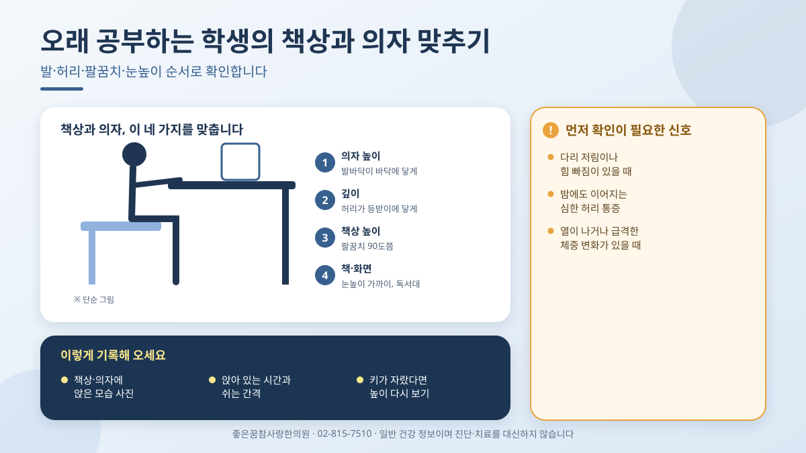

이종호 한의사 감수좋은꿈참사랑한의원 대표원장 (한의사 면허번호 19769)발행 2026-11-22 · 수정 2026-11-26
이 글의 차례
점심으로 학원 앞에서 컵밥을 먹고 자습실로 돌아옵니다. 두 시간쯤 문제를 풀다가 화장실에 가려고 일어서는데, 허리가 한 번에 펴지지 않아 책상 모서리를 짚습니다. 몇 걸음 걷고 나면 풀리니 별일 아니겠거니 하고 다시 앉습니다.
밤에 고시원 방으로 돌아와서도 공부는 이어집니다. 침대에 걸터앉아 노트북으로 인강을 켜면 삼십 분도 안 되어 허리 아래가 묵직해집니다. 베개를 등 뒤에 받쳐 보다가, 결국 엎드린 채 강의를 마저 듣게 되지요.
진료실에서 수험생들에게 이런 질문을 자주 받습니다. "의자가 문제일까요, 제 허리가 약한 걸까요?" "운동을 따로 해야 하나요?" 하루 대부분을 앉아서 보내는데 허리 때문에 공부를 멈출 수는 없으니, 답답한 마음이 드는 것도 당연합니다.
아프다는 말을 꺼내는 것조차 미안해하는 분도 계십니다. 다들 참고 하는데 나만 유난인 것 같다고요. 같은 의자에서 같은 자세로 몇 달을 버텨 온 몸이니, 허리가 신호를 보내는 것은 이상한 일이 아닙니다.
먼저 답부터 드리겠습니다. 의자는 발바닥이 바닥에 닿고 무릎이 엉덩이와 비슷하거나 조금 낮은 높이로 맞춥니다. 엉덩이는 등받이 끝까지 깊숙이 넣고, 허리와 등받이 사이가 뜨면 작은 쿠션이나 말아 둔 수건으로 받칩니다.
책상은 팔꿈치를 얹었을 때 어깨가 들리지 않는 높이면 됩니다. 책은 독서대로 세우고 노트북은 받침대에 올려 고개를 깊이 숙이지 않게 합니다. 독서실처럼 책상 높이를 바꿀 수 없다면 의자를 맞추고, 모자란 만큼 발 받침으로 채우시면 됩니다.
왜 오래 앉아 있으면 허리가 먼저 지칠까요
허리뼈는 원래 앞쪽으로 살짝 휘어진 곡선을 가지고 있습니다. 엉덩이를 의자 앞쪽으로 빼고 등을 기대어 앉으면 이 곡선이 펴지면서, 허리 아래쪽 근육과 디스크가 그 자세를 오래 버텨야 합니다. 앉은 시간이 길수록 부담은 쌓입니다.
의자와 책상이 몸에 맞지 않으면 이런 자세가 저절로 만들어집니다. 의자가 높아 발이 뜨면 허벅지 뒤가 눌리고 몸이 앞으로 미끄러집니다. 책상이 낮으면 등이 굽고, 높으면 어깨가 올라가 목까지 뻣뻣해지기 쉽습니다.
책을 책상에 눕혀 두고 보는 습관도 그렇습니다. 고개가 숙여지면 등이 따라 말리고, 등이 말리면 허리 곡선도 함께 펴집니다. 머리에서 시작된 자세가 허리까지 내려오는 셈이지요.
좌우 습관도 한몫합니다. 다리를 한쪽으로 꼬거나, 한쪽 엉덩이에 체중을 싣거나, 필기하는 팔 쪽으로 몸을 비틀어 앉는 버릇은 골반 양쪽에 다른 부담을 남깁니다. 무거운 책가방을 늘 같은 어깨에 메는 것도 마찬가지입니다.
성장기 학생이라면 한 가지를 더 보셔야 합니다. 키는 부쩍 자랐는데 책상과 의자는 작년 그대로인 경우입니다. 지난 학기에 잘 맞던 높이가 지금은 낮을 수 있습니다.
그리고 잠입니다. 시험이 다가올수록 잠은 줄고 앉는 시간은 늘어납니다. 잠이 모자라면 같은 뻐근함도 더 크게 느끼는 분이 많아, 저는 허리 이야기를 듣다가도 몇 시에 주무시는지를 꼭 여쭙습니다.
- 허리 곡선이 펴진 채 오래 앉아 있는 자세
- 몸에 맞지 않는 의자·책상 높이와 눕혀 둔 책
- 다리 꼬기, 한쪽으로 기대기 같은 좌우 습관과 모자란 잠
아픈 곳과 원인이 있는 곳이 늘 같지는 않습니다. 엉덩이 근육이 굳어 허리가 대신 일을 많이 하고 있거나, 골반 높이가 좌우로 다른 경우도 있습니다. 그래서 허리 한 곳만 보지 않고 앉는 모습 전체를 함께 봅니다.
저는 이런 통증을 몸이 켜 주는 경고등에 빗대어 말씀드리곤 합니다. 파스를 붙여 불을 잠깐 끄는 것도 필요하지만, 불을 켠 이유가 의자와 자세라면 그 자리도 함께 손봐야 같은 불이 다시 들어오는 일을 줄이는 데 도움이 될 수 있습니다.
책상 앞에서 1분, 지금 자세를 점검해 보세요
지금 평소 공부하는 자리에 앉아 계시다면 그대로 확인해 보세요. 발바닥 전체가 바닥에 닿아 있나요? 의자 앞쪽에 걸터앉아 있지는 않나요? 손을 허리 뒤로 넣어 보았을 때 등받이와 허리 사이가 주먹 하나만큼 비어 있지는 않나요?
이번에는 팔꿈치를 책상에 얹어 봅니다. 어깨가 귀 쪽으로 들리면 책상이 높거나 의자가 낮은 것이고, 팔꿈치를 얹으려고 몸을 숙여야 한다면 책상이 낮은 것입니다.
마지막으로 책을 보는 눈길을 따라가 보세요. 턱이 가슴 쪽으로 당겨질 만큼 내려다보고 있다면 책을 조금 세워야 합니다. 세 가지 가운데 하나라도 걸린다면, 오늘은 그것 하나만 고쳐도 충분합니다.
의자를 먼저, 책상은 그다음에 맞춥니다
맞추는 데에는 순서가 있습니다. 대부분의 책상은 높이를 바꿀 수 없으니 의자부터 몸에 맞추고, 남는 차이는 발 받침과 독서대로 채우는 편이 쉽습니다.
먼저 의자 높이입니다. 발바닥이 바닥에 편하게 닿고 무릎이 엉덩이와 비슷하거나 조금 낮게 오도록 맞춥니다. 그다음 엉덩이를 등받이 끝까지 밀어 넣고, 허리 뒤가 뜨면 작은 쿠션이나 말아 둔 수건을 허리띠 높이쯤에 받칩니다.
이때 허리를 일부러 젖힐 필요는 없습니다. 원래 있던 곡선이 무너지지 않게 받쳐 주는 정도면 됩니다. 너무 꼿꼿하게 힘을 주고 앉으면 오히려 금방 지칩니다.
이제 팔꿈치를 책상에 얹어 봅니다. 어깨가 들리지 않고 팔꿈치가 90도쯤 편하게 굽으면 맞습니다. 책상이 높아 어깨가 들린다면 의자를 조금 올리고, 그만큼 발이 뜨면 발 받침이나 상자, 두꺼운 책을 발밑에 둡니다.
마지막은 눈높이입니다. 읽는 공부를 할 때는 독서대를 세워 시선이 살짝만 내려가게 하고, 인강을 볼 노트북은 받침대에 올려 화면 위쪽이 눈높이쯤 오게 합니다. 키보드와 마우스는 따로 두어야 팔이 편합니다.
독서실, 자습실, 고시원은 사정이 다릅니다
같은 원칙이라도 공부하는 자리마다 맞추는 방법이 조금씩 다릅니다. 노량진과 상도동에서 자주 듣는 자리를 예로 들어 보겠습니다.
독서실 칸막이 책상에서 공부한다면, 책상 높이는 정해져 있고 의자만 조절되는 일이 많습니다. 의자를 책상에 맞춰 올린 뒤 발이 뜨는 만큼 발 받침을 두고, 허리 뒤에 댈 작은 쿠션은 가방에 넣어 다니시길 권합니다.
학원 자습실처럼 공용 의자를 쓴다면 높이를 바꿀 수 없을 때가 많습니다. 수건 한 장을 말아 허리 뒤에 대고, 발이 뜨면 가방을 눕혀 발밑에 받쳐 보세요. 매번 자리가 바뀐다면 앉자마자 이 두 가지부터 하는 습관을 들이면 됩니다.
고시원처럼 방이 좁아 침대에 걸터앉거나 바닥에 앉아 공부하는 경우도 있습니다. 침대 가장자리와 푹 꺼지는 매트리스는 허리를 받쳐 주지 못하고, 바닥에 양반다리로 오래 앉으면 허리 곡선이 펴지기 쉽습니다.
이럴 때는 작은 의자라도 하나 두고, 바닥에 앉는 시간은 짧게 나누세요. 침대는 공부하는 자리가 아니라 쉬는 자리로 남겨 두는 편이 허리에도, 잠에도 좋습니다.
먼저 이렇게 여쭙니다
허리 때문에 오셨지만 저는 앉는 자리와 하루 시간표를 먼저 여쭙니다. 기억나는 만큼만 말씀해 주셔도 괜찮습니다.
- 하루에 몇 시간을 앉아 있고, 한 번 앉으면 몇 분 만에 일어나나요?
- 앉았을 때 발바닥이 바닥에 닿고, 허리가 등받이에 닿나요?
- 앉아 있을 때, 앉았다 일어설 때, 아침에 일어날 때 중 언제 가장 아픈가요?
- 엉덩이나 다리 쪽으로 저리거나 당기는 느낌이 있나요?
- 요즘 몇 시에 자고 몇 시에 일어나나요?
언제 아픈지를 여쭙는 데에는 까닭이 있습니다. 앉아 있을수록 심해지는지, 일어설 때 잠깐 걸리는지, 아침에 가장 뻣뻣한지에 따라 먼저 살펴볼 곳이 달라지기 때문입니다.
운동은 아프지 않은 만큼, 작게 자주
허리가 아프면 마음이 급해집니다. 영상에서 본 허리 운동을 밤마다 몰아서 하거나, 당기는 느낌이 올 때까지 스트레칭을 끝까지 버티는 분이 있습니다. 반대로 시험이 끝나면 한꺼번에 하겠다고 미뤄 두는 분도 많습니다.
저는 어느 쪽도 권하지 않습니다. 운동하면서 아프거나 힘들어 쓰러질 것 같다면 그 운동은 지금 몸에 맞지 않는 것입니다. 일주일에 한 번 세게 하는 것보다 매일 조금씩 하는 쪽이 오래갑니다.
평소 하던 운동이 있다면 무게나 시간을 70% 정도로 낮춰 보세요. 다음 날 허리가 더 불편하지 않으면 조금씩 되돌리고, 불편이 늘면 그 동작은 잠시 쉽니다. 스트레칭도 억지로 늘리기보다 스스로 움직일 수 있는 가벼운 동작부터 시작하면 됩니다.
가장 쉬운 운동은 걷기입니다. 점심을 먹고 바로 자리에 앉지 말고 한 블록이라도 천천히 돌아서 들어오세요. 되는 범위에서 자주 움직이면 굳어 있던 범위도 조금씩 넓어질 수 있습니다. 오늘 한 번에 해내려 하지 말고, 작게 여러 번 하시면 됩니다.
일상에서 먼저 해 볼 수 있는 것
- 30~50분 앉았다면 일어나 허리를 천천히 펴고 몇 걸음 걷기
- 다리 꼬지 않고 양발을 바닥에 두기, 가방은 양쪽 어깨로 메기
- 책상에 엎드려 쪽잠 자지 않기, 쉴 때는 의자에 등을 기대고 짧게
- 바로 누울 때 무릎 아래에 베개를 받쳐 허리 부담 덜기
- 새 학기나 키가 부쩍 자란 뒤에는 의자 높이를 다시 맞추기
쉬는 시간에 휴대폰을 볼 때도 고개를 깊이 숙이지 말고, 일어선 채 눈높이 가까이 들고 보세요. 앉은 자세 그대로 화면만 바뀌면 허리는 쉬는 줄을 모릅니다.
아침에 일어날 때 허리가 뻣뻣하다면 바로 몸을 숙이지 마세요. 누운 채 무릎을 세워 좌우로 가볍게 흔든 뒤, 옆으로 돌아누워 팔로 밀며 일어나면 허리가 덜 놀랍니다.
한의원에서 함께 살필 수 있는 경우
- 의자와 책상을 맞춰 봤는데도 앉으면 허리가 금방 뻐근해지는 경우
- 앉았다 일어설 때 허리가 바로 펴지지 않는 일이 몇 주째 이어지는 경우
- 허리와 함께 목·어깨가 굳고 잠이나 소화까지 흔들리는 경우
- 골반이 틀어졌다는 말을 듣거나 한쪽으로 기울어 앉는 버릇이 있는 경우
처음 오시면 언제부터, 어떤 자세에서 아픈지를 먼저 듣습니다. 그다음 양손의 맥을 짚습니다. 처음 오신 분이든 다시 오신 분이든 맥은 빼놓지 않는데, 허리 이야기를 하러 오셨다가 잠 이야기를 더 길게 하고 가시는 날도 있습니다.
이어서 서 있는 자세와 걷는 모습, 허리를 숙이고 젖히는 범위를 보고 팔다리 힘을 좌우로 비교합니다. 다리 저림이 있으면 감각과 힘을 함께 확인하고, 필요하다고 판단되면 초음파로 근육과 힘줄 주변을 봅니다. 화면이 깨끗해도 아플 수 있어 화면 하나로 판단하지는 않습니다.
그다음 지금 상태에 맞는 방법을 함께 정합니다. 굳은 근육과 조직은 침과 약침으로, 정렬은 추나로 나누어 생각하고, 대개 침을 먼저 놓은 뒤 추나와 물리치료로 이어 갑니다. 추나는 '뚝' 소리를 내는 것이 목표가 아니라, 몸이 편하게 움직일 방향을 찾는 것이 목표입니다.
치료를 많이 받는다고 좋은 것이 아니어서, 오늘 상태에 맞는 것만 고릅니다. 귀가하시기 전에는 쿠션 위치와 앉는 깊이를 다시 한번 맞춰 보고, 독서실과 방에서 지킬 자세를 알려 드립니다.
이렇게 기록해 오시면 상담이 쉬워집니다
- 공부하는 책상과 의자 사진, 앉아 있는 옆모습 사진
- 하루 앉아 있는 시간과 쉬는 간격
- 허리가 뻐근해지는 시각과 그때 하던 일
- 저림이 있다면 내려가는 위치, 복용 중인 약
허리 통증은 언제 시작되는지, 얼마나 자주 오는지, 한 번 오면 얼마나 가는지, 무엇을 하면 덜해지는지 네 가지만 적어 오셔도 진료가 한결 빨라집니다. 휴대폰 메모장에 한 줄씩 적어 두시면 됩니다.
오시는 날에는 한두 시간 전에 물을 한두 잔 드시고, 허리를 숙이고 젖히기 편한 옷을 입고 오세요. 물을 거의 안 드신 날은 힘을 확인할 때 평소와 다르게 나올 수 있습니다.
이런 증상은 먼저 확인이 필요합니다
- 대소변을 보기 어렵거나 참기 어려워진 경우
- 엉덩이와 사타구니, 허벅지 안쪽처럼 안장에 닿는 부위의 감각이 둔해진 경우
이런 신호가 있으면 한의원보다 가까운 병원이나 응급실을 먼저 찾으세요.
마치며
책상 앞에서 보내는 하루는 깁니다. 그 긴 시간을 버텨 준 허리가 뻐근하다고 말할 때, 그건 의지가 약해서가 아니라 자리를 한번 다시 맞춰 달라는 신호일 수 있습니다. 의자 높이를 바꾸고 수건 한 장을 허리 뒤에 넣는 데에는 오 분도 걸리지 않습니다.
시험까지 남은 시간이 아까워 몸을 뒤로 미루고 싶은 마음, 압니다. 그래도 허리가 편해야 오래 앉아 있을 수 있습니다. 오늘 공부를 시작하기 전에 의자부터 한번 맞춰 보세요.
다음에 진료실에서 뵈면, 저는 어떤 의자에 몇 시간씩 앉으시는지, 그리고 요즘 몇 시에 주무시는지부터 여쭙겠습니다.
함께 읽으면 좋은 글
- 오래 앉아 공부하거나 일할 때 허리와 골반은 얼마 간격으로 쉬어 주나요?
- 앉을 때도 누울 때도 허리 곡선을 지키라는 건 무슨 뜻인가요?
- 허리 디스크 초기 신호와 다리 저림은 어떻게 구분하나요?

여쭙는 것
- 하루에 몇 시간을 앉아 있고, 한 번 앉으면 몇 분 만에 일어나나요?
- 앉았을 때 발바닥이 바닥에 닿고, 허리가 등받이에 닿나요?
- 앉아 있을 때, 앉았다 일어설 때, 아침에 일어날 때 중 언제 가장 아픈가요?
생활에서 해 볼 것
- 30~50분 앉았다면 일어나 허리를 천천히 펴고 몇 걸음 걷기
- 다리 꼬지 않고 양발을 바닥에 두기, 가방은 양쪽 어깨로 메기
- 책상에 엎드려 쪽잠 자지 않기, 쉴 때는 의자에 등을 기대고 짧게
한의원에서 함께 살필 것
- 의자와 책상을 맞춰 봤는데도 앉으면 허리가 금방 뻐근해지는 경우
- 앉았다 일어설 때 허리가 바로 펴지지 않는 일이 몇 주째 이어지는 경우
- 허리와 함께 목·어깨가 굳고 잠이나 소화까지 흔들리는 경우
먼저 확인이 필요한 신호
- 대소변을 보기 어렵거나 참기 어려워진 경우
- 엉덩이와 사타구니, 허벅지 안쪽처럼 안장에 닿는 부위의 감각이 둔해진 경우
한눈에 보는 표
| 구분 | 핵심 |
|---|---|
| 여쭙는 것 | 하루에 몇 시간을 앉아 있고, 한 번 앉으면 몇 분 만에 일어나나요? 앉았을 때 발바닥이 바닥에 닿고, 허리가 등받이에 닿나요? |
| 생활에서 해 볼 것 | 30~50분 앉았다면 일어나 허리를 천천히 펴고 몇 걸음 걷기 다리 꼬지 않고 양발을 바닥에 두기, 가방은 양쪽 어깨로 메기 |
| 한의원에서 함께 살필 것 | 의자와 책상을 맞춰 봤는데도 앉으면 허리가 금방 뻐근해지는 경우 앉았다 일어설 때 허리가 바로 펴지지 않는 일이 몇 주째 이어지는 경우 |
| 먼저 확인이 필요한 신호 | 대소변을 보기 어렵거나 참기 어려워진 경우 엉덩이와 사타구니, 허벅지 안쪽처럼 안장에 닿는 부위의 감각이 둔해진 경우 |
자주 묻는 질문
허리 쿠션을 써도 되나요?
네. 허리와 등받이 사이 빈 곳을 받쳐 주는 정도의 작은 쿠션이나 말아 둔 수건이면 충분합니다. 너무 두꺼워 몸이 앞으로 밀리면 오히려 불편하니, 앉았을 때 편한 두께를 찾아 쓰세요.
바닥에 앉아서 공부하는 것은 괜찮나요?
바닥에 양반다리로 오래 앉으면 허리 곡선이 펴지기 쉽습니다. 의자와 번갈아 쓰시고, 바닥에 앉을 때는 벽에 등을 기대고 시간을 짧게 나누세요.
발이 바닥에 닿지 않으면 어떻게 하나요?
발 받침대나 상자, 두꺼운 책을 발밑에 두어 무릎과 엉덩이 높이가 비슷해지도록 맞춥니다. 받침이 없는 자습실이라면 가방을 눕혀 받쳐도 됩니다.
의자를 새로 사야 할까요?
바꾸기 전에 지금 의자에서 높이, 앉는 깊이, 허리 받침, 발 받침부터 맞춰 보시길 권합니다. 새로 고르신다면 높이를 조절할 수 있는지, 등받이가 허리를 받쳐 주는지 직접 앉아 보고 정하세요.
서서 공부하면 허리가 덜 아플까요?
서 있는 자세도 오래 이어지면 부담이 됩니다. 앉기와 서기를 번갈아 하시고, 서 있을 때는 양발에 체중을 고르게 싣거나 한 발씩 낮은 받침에 번갈아 올려 두세요.
좋은꿈참사랑한의원은 재진 때 지난번 이야기부터 이어서 여쭙니다. 진료시간과 예약은 오시는 길에서 확인하세요.
어디서 상담받을 수 있나요?
좋은꿈참사랑한의원은 서울 동작구 만양로2길 2 신성빌딩 3층·5층(서울 동작구 상도동, 7호선 상도역 3번 출구 근처)에 있습니다. 한의사 3명(이종호 대표원장, 조영기 수석진료원장, 정원영 진료원장)이 진료합니다. 진료시간은 평일 09:30~20:00(점심 13:00~14:00), 토·일·공휴일 09:30~15:00이며, 방문 전 전화로 확인을 권합니다. 예약은 네이버 예약, 카카오톡 상담, 전화 02-815-7510로 받습니다.
이 글은 일반적인 건강 정보이며 개인의 진단이나 치료를 대신하지 않습니다. 증상이 있거나 복용 중인 약이 있다면 진료를 통해 확인하세요. 치료 효과는 개인마다 다를 수 있습니다.
작성 기준: 일반적으로 알려져 있는 건강 정보를 참고해 정리했습니다(대표원장 감수). 증상 기록은 1~2주 동안 하루 1회, 비슷한 시간에 적어 오시면 지난 상태와 비교하기 쉽습니다.